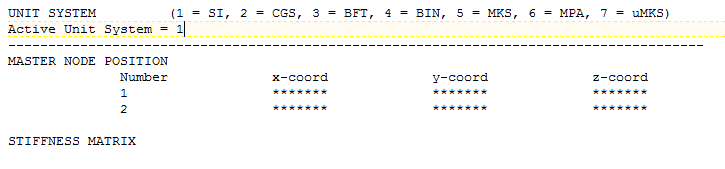

|
|
|


主要计算步骤
进行此类分析的计算步骤如下所述。实际用于生成缩减刚度矩阵的过程未作描述，因为该过程因每个 FEM 计算机程序而异。请参阅您的 FEM 程序手册以获取更多信息。
步骤1： 导入刚度矩阵和 FEM 节点坐标
第一步是读取刚度矩阵和 FEM 节点坐标。为此，在 KISSsys 模型中调用箱体元素中的相关函数（右键单击，选择 ImportStiffnessMatrix）。刚度矩阵和节点坐标应位于同一文件中，与所使用的单位制信息一起放在文件头。以下是此类文件（现在可由 KISSsys 处理）的一个示例：

*******
有关支持的FE程序和文件格式要求的更详细信息，请参见相关说明（可按要求获取）。
步骤2：在 KISSsys 模型中正确定位箱体
由于 FEM 模型和 KISSsys 模型可能具有不同的坐标系，您随后应在 KISSsys 模型中正确定位箱体。为此，再次右键单击箱体元素，并选择 ResetPosition 函数。在下一个对话框中，您可以直接输入箱体 CS 的原点和方位，或者使用 ThreePointPositioning 函数。要使用此函数，请从下拉列表中选择 KISSsys 模型中的三个点（例如轴承），然后在箱体坐标系中输入相同三个点的坐标。请确保这三个点不共线。该过程会返回相对于 KISSsys CS 的箱体 CS。您还可以通过导入箱体的简化 step 文件（例如仅线框）并在 KISSsys 3D 查看器中显示它，进行目视检查以确认定位正确。要将 step 文件导入箱体，请右键单击它并选择 Dialog。我们建议您使用简化版本，以免 KISSsys 模型过载。最后，您还可以决定 FEM 节点如何在 KISSsys 模型上显示，方法是右键单击箱体元素并在上下文菜单中选择 ShowNodes。每当箱体的方位发生变化时，您必须再次选择 ShowNodes，以更新 KISSsys 中的节点视图。如果您单击 ShowNodes，您还会看到所显示 FEM 节点的 ID，这有助于验证定位。此处请注意，您无需向箱体元素添加切削模型。但是，简化的 CAD 模型可作为验证正确定位的额外辅助手段。
请注意，当使用 step 模型对箱体进行几何表示时，它应与缩减后的 FEM 刚度矩阵处于同一坐标系，以确保定位后模型正确显示。
步骤3：进行分析
点击箱体计算按钮以开始分析。计算的第一步是将 FEM 节点映射到 KISSsys 轴承上。程序会报告所有节点，并显示它们到最近轴承的距离。此时，需要知道指定节点的位置是否确实对应于轴承。然后可决定继续计算或取消计算。特定轴承不对应于节点的一个可能原因是箱体在 KISSsys CS 中的位置不正确。如果确实如此，必须重复上一步。如果并非如此，且 FEM 节点与轴承（如映射信息中报告的）之间的差异不大，可更改映射过程中使用的公差。例如，如果 FEM 节点位于轴承边缘而不是中间时，就可能发生这种情况。映射过程中使用的公差可以在 变量中更改，在 KISSsys 中的箱体属性中（右键单击箱体元素并打开 窗口）。在那里，公差以毫米为单位给出。
如果继续计算，程序会缩减与映射节点对应的部件的刚度矩阵，因此忽略所有未映射到轴承的节点。计算还忽略轴承中之前定义的偏置距和倾斜值，并将它们设为零。算法运行所有 KISSsoft 计算，并从结果中推导出轴承上的力。程序随后使用这些力来计算轴承上的偏置距和倾斜（使用 FEM 刚度矩阵）。接着再次运行 KISSsoft 计算，使用所得的偏置距，这可能导致新的轴承力和偏置距值。此过程会迭代进行，直到连续两次力和偏置距计算之间出现收敛。在计算过程中，有时由于箱体刚度较低，可能会达到最大允许的迭代次数。在这种情况下，系统将显示最后两次迭代之间的百分比差异，并应用最后一次迭代的结果。可在箱体元素的属性中设置“最大迭代次数”（右键单击箱体元素，然后选择“属性”）。相关属性称为“”。用户应输入一个大于 4 的数值，以确保算法找到一个有用的解。计算完成后，可进行进一步的分析。例如，可对齿轮进行接触分析，以查看箱体刚度对齿轮单元设计参数的影响。
您也可以在 KISSsys 模型中使用几个箱体，每个箱体具有不同的刚度矩阵。在这种情况下，程序会在开始计算前提示您选择它应使用的箱体。这在您希望比较不同箱体设计对齿轮单元设计的影响时非常有用。通过这种方法计算出的每个箱体的结果则存储在箱体元素中。这些结果可以通过单击箱体元素的 功能（右键单击箱体）。
以下处理位移的功能也已提供（公差保持不变）。
- ResetBearingOffsets: 重置所有轴承偏置距值为零。
- SaveBearingOffsets: 保存当前位移值。
- RestoreBearingOffsets: 恢复保存的位移值。
Main calculation steps
The calculation steps for performing this kind of analysis are summarized below. The actual process used to generate the reduced stiffness matrix is not described, because it is different for each FEM computer program. Please refer to your FEM program manuals for more information.
Step 1: Importing the stiffness matrix and the FEM nodes coordinates
The first step is to read the stiffness matrix and the FEM node coordinates. To do this, calling the relevant function in the housing element, in the KISSsys model (right-click, select ImportStiffnessMatrix). Both the stiffness matrix and node coordinates should be positioned in the same file, together with information about the system of units used, in the header. An example of this type of file (which can now be handled by KISSsys) is shown below:
*******
You will find more detailed information about the FE programs supported by the software, and the file format requirements, in the relevant instructions (available on request).
Step 2: Positioning the housing correctly in the KISSsys model
Since the FEM model and the KISSsys model may not have the same coordinates system, you should then position the housing correctly in the KISSsys model. To do this, right-click on the housing element again, and select the ResetPosition function. In the next dialog, you can either input the origin and alignment of the housing CS directly, or use the ThreePointPositioning function. To use this function, select three points (e.g. bearing) in the KISSsys model from a drop-down list, and then enter the coordinates of the same three points in the housing coordinates system. Make sure that these three points are not collinear. This procedure returns the housing CS with respect to the KISSsys CS. You can also perform a visual check to see that the positioning is correct by importing a simplified step file of the housing (e.g. only wireframe) and displaying it in the KISSsys 3D viewer. To import a step file into the housing, right mouse-click on it and select Dialog. We recommend you use a simplified version to avoid overloading the KISSsys model. Finally, you can also decide how the FEM nodes are displayed on the KISSsys model, by right-clicking on the housing element and selecting ShowNodes in the context menu. Every time the orientation of the housing is changed, you must select ShowNodes again, to update the nodes view in KISSsys. If you click on ShowNodes, you also see the IDs of the displayed FEM nodes, which makes it easier to validate the positioning. Note here that you do not need to add a cutting model to the housing element. However, the simplified CAD model is useful as an additional aid for validating the correct positioning.
Note that when a step model is used for the geometrical representation of the housing, it should be in the same coordinate system as the reduced FEM stiffness matrix to ensure the model is displayed correctly after the positioning.
Step 3: Performing the analysis
Click on the housing calculation button to start the analysis. The first step in the calculation is to map the FEM nodes on KISSsys bearings. The program reports all the nodes and displays their distance to the closest bearing. At this point, you need to know if the positions of the specified nodes actually correspond to the bearings. You can then decide whether to continue with the calculation or cancel it. One possible reason for specific bearings not corresponding to nodes is that the housing is positioned incorrectly in the KISSsys CS. If this is the case, then the previous step must be repeated. If this is not the case, and the difference between FEM nodes and bearings (as reported in the mapping message) is not too great, you can change the tolerance used in the mapping process. This may happen, for example, if the FEM node is positioned at the edges of a bearing instead of in the middle. The tolerance used in the mapping can be changed in the variable, in the housing properties in KISSsys (right-click on the housing element and open the window). There, the tolerance is given in milimeters.
If you continue the calculation, the program reduces the stiffness matrix for the part that corresponds to the mapped nodes, and therefore ignores all nodes that have not been mapped to bearings. The calculation also ignores any predefined offsets and tilting values previously specified in the bearings and sets them to zero. The algorithm runs all the KISSsoft calculations and derives the forces on the bearings from their results. The program then uses these forces to calculate the offsets and tilting on the bearings (using the FEM stiffness matrix). The KISSsoft calculations are then run again with the resulting offsets, which may result in new bearing forces and offset values. This procedure is continued iteratively until there is convergence between successive forces and offset calculations. During the calculation process, it might sometimes happen that the maximum permitted number of iterations is reached due to housings with low stiffness. In this case, the system will display a message about the percentage difference between the last two iterations and apply the results from the last iteration. You can set the "Maximum no. of iterations" in the housing element's properties (right-click on the housing element, and then select Properties). The relevant property is called "". You should input a number that is greater than 4, to ensure the algorithm finds a useful solution. After the calculation is finished, you can perform further investigations. For example, you can perform contact analysis on gears to see the effect of housing stiffness on the gear unit design parameters.
You can also use several housings, each with a different stiffness matrix, in the KISSsys model. In this case, the program prompts you to select the housing it should use, before starting the calculation. This can be very useful if you want to compare the effect of different housing designs on the gear unit design. The results for each housing calculated using this method are then stored in the housing element. These results can then be viewed again by clicking on the housing element's function (right-click on the housing).
The following functions for handling displacement are also available (the tolerances remain the same).
- ResetBearingOffsets: reset all bearing offset values to zero.
- SaveBearingOffsets: save the current displacement values.
- RestoreBearingOffsets: recover the saved displacement values.